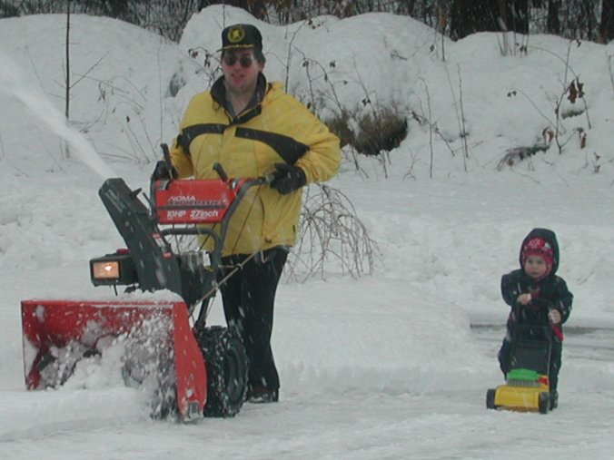

Using a snowblower to clear the sidewalk
after an inch of snow has fallen?
A snowblower makes this a very easy job, even when far more than one inch has fallen. Our modern word herculean means something different.
Please try again.
|

My toy lawnmower is just like Daddy's snowblower, only littler, like me!
|